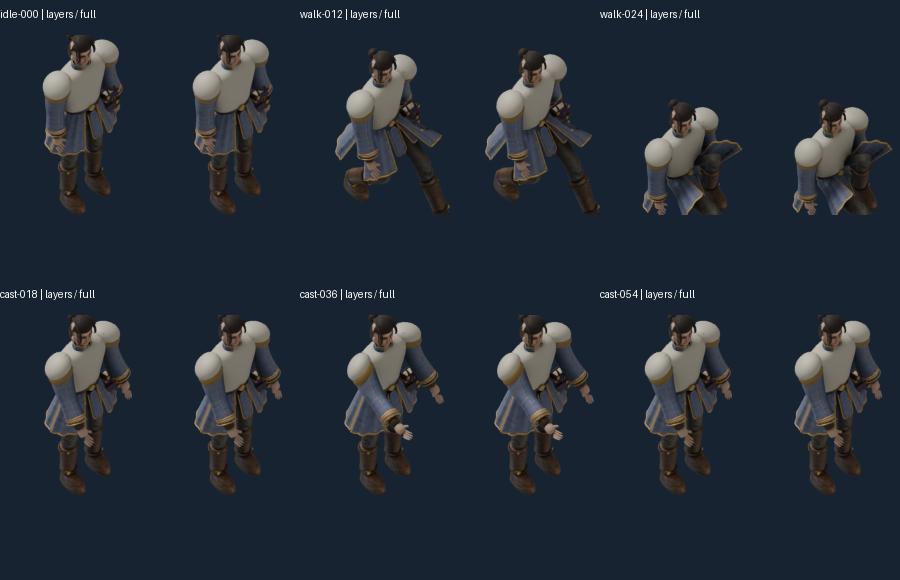
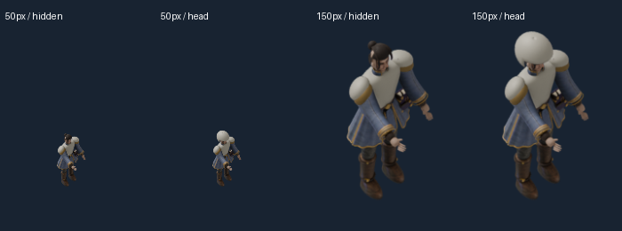

Scoped pass: six poses, helmet shown/hidden, three backgrounds. Plain geometry probe, not finished painted armor. Gear lighting/shadows remain unqualified.


36 actual Pixi comparisons pass the frozen occupied-pixel tolerance. Wrong-fit and20px shifted-gear controls fail as required.
Findings, failed capture and limitations · Pixel evidence · 216 source-pose checks · Interactive local probe